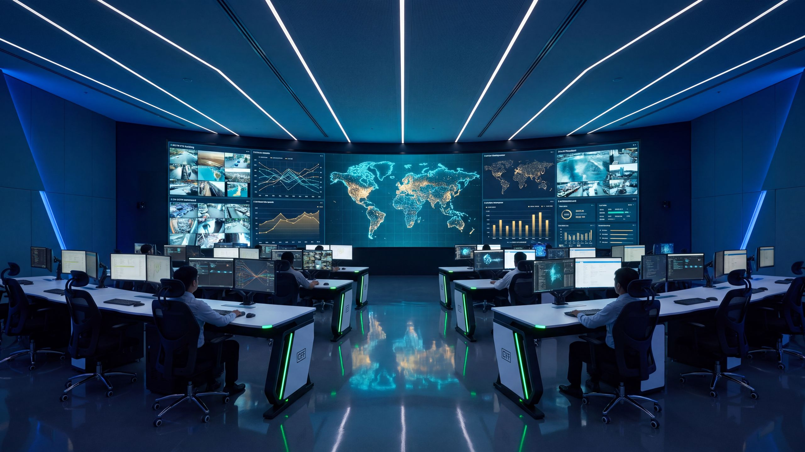
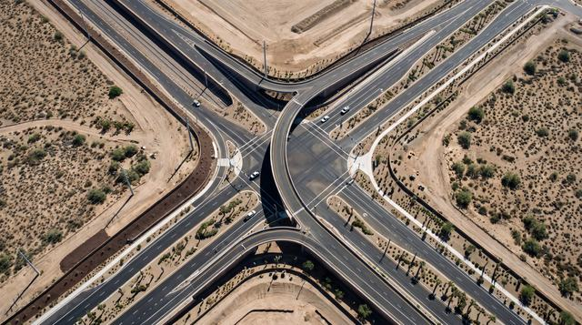
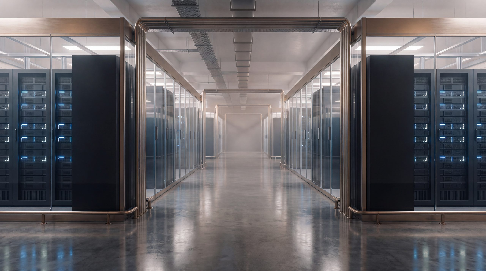
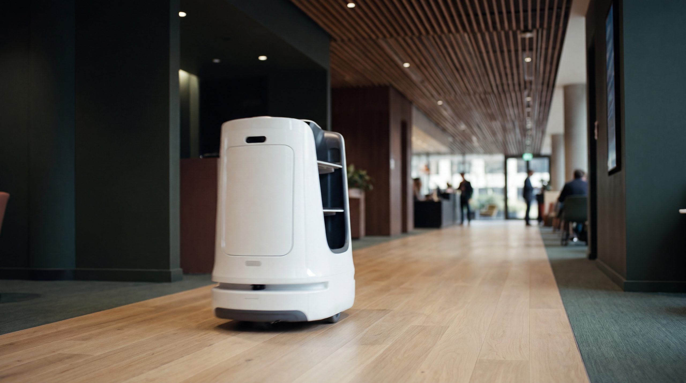

المجال 01
التقنية والبنية التحتية الذكية
أنظمة ذكية للعمليات الحيوية.
نظرة عامة
06خدمات رئيسية
نصمّم ونورّد ونُكامل بنية الحوسبة والذكاء الاصطناعي والعمليات التي تُبقي المؤسسات على اطلاع وتحكم دائمين، بدءًا من منصات GPU والروبوتات وصولًا إلى مراكز القيادة التي تعمل على مدار الساعة.
- 01
تمكين الذكاء الاصطناعي
تقييم الجاهزية وتنفيذ حالات الاستخدام وبناء أسس البيانات اللازمة لتشغيل الذكاء الاصطناعي فعليًا.
- 02
حلول GPU
حوسبة GPU عالية الأداء مع التخزين والشبكات لتدريب نماذج الذكاء الاصطناعي وتشغيلها، داخل المنشأة أو بنموذج هجين.
- 03
الروبوتات
روبوتات الخدمة والتوصيل، متكاملة مع منشآتك وأنظمتك وعملياتك اليومية.
- 04
مراكز القيادة والتحكم
بيئات للمراقبة والتحليل واتخاذ القرار في الوقت الفعلي للجهات الحكومية والمؤسسات.
- 05
مراكز عمليات الشبكات (NOC)
مراكز عمليات شبكات مصممة لغرضها، تجمع بين أنظمة العرض ومنصات المراقبة والبنية التحتية الموثوقة.
- 06
مراكز العمليات الأمنية (SOC)
بيئات مراكز عمليات أمنية تجمع المحللين والإجراءات والأدوات الأمنية في مساحة واحدة.
القيادة والتحكم
من داخل مركز عمليات من تنفيذنا.
جدران الفيديو ومنصات المراقبة والفرق التي تديرها، مصممة كبيئة واحدة. الجدار أدناه محاكاة حيّة للصورة التي تجمعها مراكز القيادة وعمليات الشبكات والعمليات الأمنية التي ننفّذها.
شبكة المواقع المملكة العربية السعودية · مخطط توضيحي
إنتاجية الشبكة — جيجابت/ث



استخدام عنقود الذكاء الاصطناعي
- GPU 010%
- GPU 020%
- GPU 030%
- GPU 040%
- GPU 050%
- GPU 060%
- GPU 070%
- GPU 080%
سجل الأحداث
واجهة توضيحية. جميع الأرقام محاكاة.



منهجيتنا
فريق واحد في كل مرحلة
- 01
الاستشارة
المتطلبات والمستخدمون والموقع ومعايير النجاح.
- 02
التصميم
الهندسة واختيار التقنيات والهندسة القيمية.
- 03
التنفيذ
التوريد والإنشاء والتركيب والتكامل.
- 04
الدعم
التشغيل التجريبي والتدريب والصيانة والتحديث.